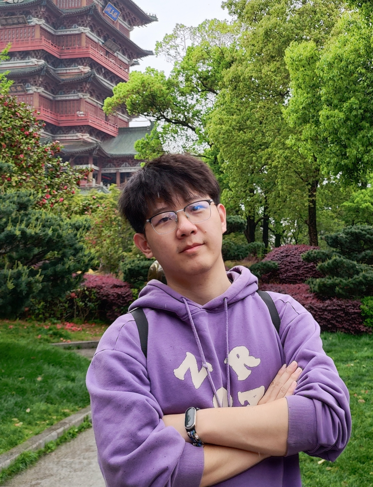

Assistant Professor
助理教授 / 硕士生导师
Computer Science
计算机工程与科学学院
Shanghai University
上海大学
🏢 99 Shangda Road, CS Building, Baoshan District, Shanghai 上海市宝山区上大路99号 计算机楼
A welcoming path into AI agent projects, research, engineering, competitions, and creative ideas. No prior research experience is required. 面向本科生的 Agent 科研与创新入口。你可以从一个小任务开始，逐步探索科研、工程、竞赛或创意项目；不要求已有科研经历。
Currently an assistant professor at Shanghai University. Obtained Ph.D. in Computer Science from Shanghai Jiao Tong University (2024) under Prof. Liyao Xiang (向立瑶). Obtained M.S. in Mathematics from Nanjing University of Science and Technology (2019). My research explores trustworthy AI and data security, with growing interest in AI agents and agent security, alongside differential privacy, adversarial learning, and federated learning.
🔬 Undergraduate students interested in AI agents, AI security, data security, or intelligent applications can start with AgentLab. No prior research experience is required; begin with a small challenge and find a project path that fits your background and interests.
(Note: Quota for 2025/2026 Master students is full)
Reviewer for: 担任以下期刊/会议审稿人：
Fangxin Liu (刘方鑫):
Assistant Professor, ACA Lab, SEIEE, Shanghai Jiao Tong University
上海交通大学 电子信息与电气工程学院 ACA实验室 助理教授